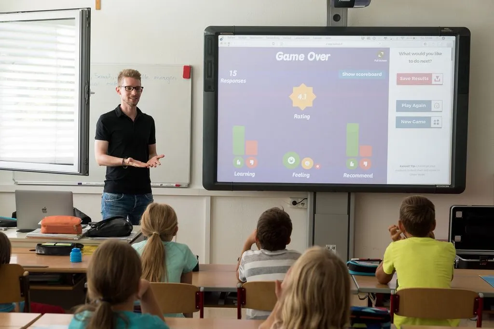
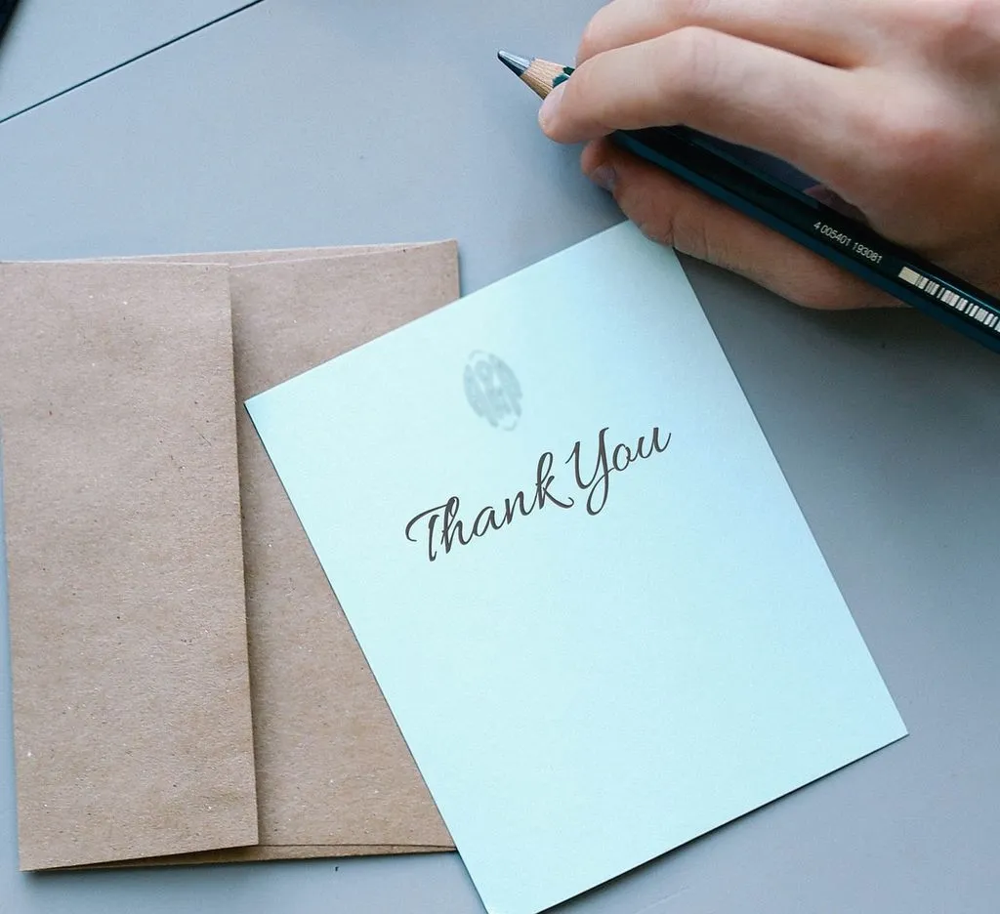

Show Your Appreciation: 10 Thoughtful Valentine's Day Gifts for Teachers
Valentine’s Day is not just about expressing love to your significant other; it’s also an opportunity to show your appreciation to those who make a significant impact in your life. And who better to honor on this special day than our beloved teachers? These dedicated individuals work tirelessly to shape young minds and deserve recognition for their hard work and dedication.
In this article, we have compiled a list of thoughtful ideas of gifts for teacher for valentines day that will surely make them feel appreciated. From personalized stationery and classroom supplies to heartfelt notes and valentine’s day cards, these options are sure to put a smile on any teacher’s face.
Whether you want to show gratitude to your child’s teacher or want to acknowledge the efforts of a mentor who has made a difference in your life, these ideas are perfect for any teacher in your life. So, this Valentine’s Day, take the opportunity to express your appreciation with one of these thoughtful gifts and let your favorite teacher know just how much they mean to you.
The importance of showing appreciation to teachers and giving gifts for teacher for valentines
Teachers play a crucial role in our lives, serving as mentors, guides, and sources of inspiration. They invest their time and energy into educating and nurturing the next generation, often going above and beyond their duties to ensure their students’ success. Yet, their hard work can sometimes go unnoticed or underappreciated. That is why it is essential to take the time to show our gratitude and acknowledge their impact on our lives.
By expressing our appreciation, we not only make our teachers feel valued and respected but also motivate them to continue their exceptional work. It creates a positive and supportive environment for both students and educators, fostering a strong sense of community within the educational system. So, this Valentine’s Day, let’s make an effort to recognize the dedication and commitment of our teachers and show them how much we truly appreciate them.

Why Valentine’s Day is a great opportunity to express gratitude to teachers
Valentine’s Day is traditionally associated with romantic love and affection. However, it can also be a wonderful occasion to extend our gratitude and appreciation to the teachers who have touched our lives. It serves as a reminder to express our feelings and acknowledge the impact these educators have had on us.
By choosing to celebrate Valentine’s Day with our teachers, we are not only honoring their efforts but also teaching our children the importance of showing appreciation and gratitude. It instills in them the values of kindness and respect, creating a ripple effect that can positively influence their relationships with teachers and others throughout their lives.
What are Some Creative Valentine’s Day Gift Ideas for Teachers?
Handmade gifts for teacher for valentines
Handmade gifts are not only thoughtful but also demonstrate the effort and care you put into creating something unique for your teacher. Whether you are artistic or not, there are plenty of DIY ideas that are both meaningful and budget-friendly.
One idea for gifts for teacher for valentines is to create a personalized photo album or scrapbook showcasing memorable moments from the school year or a particular class. Include photos, notes, and quotes that highlight the positive experiences and the growth that has taken place. Your teacher will appreciate the sentiment and the effort you put into capturing these special memories.
Another idea for handmade gifts for teacher for valentines is to create a customized piece of artwork or a craft that reflects your teacher’s interests or passions. For example, if your teacher loves gardening, you could make a personalized planter or paint a beautiful floral design. The key is to tailor it to their preferences and show that you have taken the time to understand their hobbies and interests.
Personalized Teacher Gifts - A Valentines Printable Thank You Note
A heartfelt thank you note on a thank you gift card is a simple yet powerful way to show your appreciation to a teacher. Taking the time to write a personalized message that acknowledges their hard work, dedication, and the positive impact they have made can make a lasting impression. It shows that you have taken the time to reflect on their efforts and genuinely value their contribution to your education or your child’s development.
To make it even more special, consider including specific examples of how they have made a difference in your life or the life of your child. Express your gratitude for their patience, guidance, and support. The personal touch of a handwritten note will make it a cherished keepsake that your teacher can look back on whenever they need a reminder of the positive impact they have had.

Teacher Gift Box Ideas
When it comes to showing appreciation for our educators, teacher gift boxes can be a thoughtful and practical option. For a special Valentine’s Day surprise, consider including the best teacher Valentine gifts such as a personalized mug, a scented candle, or a box of gourmet chocolates. Including a teacher bracelet or a piece of jewelry with a heartfelt message can add a personal touch to the gift box.
Another great addition to the box could be a Valentine’s Day shirt with a fun and uplifting message, making it a practical and stylish gift for the teacher to wear. By curating a gift box filled with items that are both useful and sentimental, you can show your gratitude for all the hard work and dedication that teachers put into educating and nurturing their students. And don’t forget to include a handwritten note expressing your thanks and admiration!
Gift cards to their favorite stores or restaurants
Gift cards may seem like a generic gift, but when chosen thoughtfully, they can be a great way to show your appreciation. Consider giving your teacher a gift card to their favorite bookstore, art supply store, or restaurant. This allows them to treat themselves to something they enjoy and shows that you have taken the time to learn about their preferences.
If you are unsure of their specific interests, consider a more versatile gift card, such as an Amazon or Visa gift card. This gives them the freedom to choose something they truly desire. Pair the gift card with a handwritten note expressing your gratitude, and it will make for a thoughtful and practical gift.
Classroom supplies or books
Teachers often spend their own money on classroom supplies to ensure their students have everything they need to succeed. Offering to help restock their supplies or providing them with new materials can be a thoughtful and appreciated gesture.
Consider finding out what specific supplies they need or use most frequently and surprise them with a bundle of those items. You can also give them educational books or resources that align with their teaching style or the subjects they teach. For example, you can consider something like a Supply Pencil Dispenser for Classroom if your teacher uses pencil or a Whiteboard Marker Holder if they are using markers. Not only will this help lighten their financial burden, but it will also demonstrate your understanding and support of their profession.
Relaxing spa or self-care items
Teaching can be a rewarding but demanding profession, often leaving teachers feeling stressed and overwhelmed. That is why a gift that promotes relaxation and self-care can be a thoughtful way to show your appreciation.
Consider putting together a spa basket filled with luxurious bath products, scented candles, and a cozy bathrobe. Alternatively, you could give them a massage or spa gift certificate to indulge in some well-deserved pampering. These gifts will not only help your teacher unwind but also remind them to take care of themselves amidst their demanding schedules.
Subscription boxes tailored to their interests
Subscription boxes have gained popularity in recent years, offering a wide range of options for various interests and hobbies. Consider subscribing your teacher to a monthly box that aligns with their passions, whether it be art, cooking, gaming, or gardening.
Each month, they will receive a curated selection of items related to their interests, providing them with a delightful surprise and a chance to indulge in activities they enjoy. This ongoing gift will remind your teacher of your appreciation long after Valentine’s Day has passed.
Virtual experiences or online courses
In today’s digital age, there are countless virtual experiences and online courses available that can broaden your teacher’s horizons and help them further develop their skills and knowledge. Consider gifting them an online course or a virtual experience that aligns with their interests or professional goals.
Whether it’s a photography class, a language course, or a virtual tour of a museum, these experiences can provide your teacher with new insights and opportunities for personal and professional growth. By investing in their continued education, you show your appreciation for their dedication to learning and their commitment to their craft.
How to Choose the Best Valentine’s Day Gift for Your Best Teacher?
Valentine’s Day is not just reserved for romantic gestures; it’s also a wonderful opportunity to express gratitude and appreciation for those who play a significant role in our lives. This Valentine’s Day, consider celebrating the unsung heroes in your life—your teachers. In this guide, we’ll explore creative and meaningful ways to choose the perfect Valentine’s Day gift for the educators who have made a lasting impact on your journey of learning and personal growth.
Personalized Teacher Valentine Gift
Teachers invest their time and energy in shaping minds and futures, so why not reciprocate that dedication with a personalized touch? Personalized gifts add a thoughtful and unique element to your token of appreciation. Consider a custom mug featuring a favorite quote, a personalized notebook, or even a custom-made piece of artwork that reflects the teacher’s passion. These gifts not only show effort but also convey a deep understanding of the teacher’s personality and interests.
Thoughtful Teacher Appreciation Gifts
Valentine’s Day is an ideal occasion to express your gratitude with a thoughtful and heart-warming gift. Consider items that showcase your appreciation, such as a heartfelt letter expressing the impact they’ve had on your life, a book that aligns with their interests, or a small plant for their desk—a symbol of growth, just like the knowledge they’ve nurtured within you. Thoughtful gifts go beyond material value; they create lasting memories and strengthen the bond between student and teacher.
Teacher Gift Sets
For a comprehensive and well-curated expression of appreciation, consider gift sets that cater to your teacher’s preferences. A carefully selected bundle of items, such as a combination of gourmet chocolates, a scented candle, and a personalized note, can create a delightful and memorable gift experience. Gift sets offer versatility and allow you to tailor your present to match your teacher’s tastes, making them feel truly special on Valentine’s Day.
Valentine’s Day Teacher Gift Ideas
Searching for a great gift can be a delightful adventure. Consider unique and creative ideas like a DIY gratitude jar filled with notes from students expressing their thanks, a custom-made classroom poster, or a themed gift basket featuring the teacher’s favorite snacks and treats. The key is to think outside the box and select something that resonates with your teacher’s personality and preferences.
Thank You Gifts for Teachers
Sometimes, a simple “thank you” can speak volumes. Explore gratitude-focused gifts that communicate your appreciation explicitly. A heartfelt thank-you card, a bouquet of flowers, or even a small trinket that symbolizes your gratitude can make for a meaningful and cherished Valentine’s Day gift. Remember, it’s the sentiment behind the gift that truly matters, and a sincere expression of thanks can leave a lasting impression.
What Are Some Inexpensive Yet Meaningful Valentine’s Day Gifts for Teachers?
Valentine’s Day is the perfect opportunity to express gratitude to the teachers who have dedicated their time and effort to shaping young minds. If you’re on a budget, worry not! Here are some thoughtful and budget-friendly gift ideas that will make your teacher feel appreciated without breaking the bank:
-
Handwritten Note of Appreciation:
Cost: Free
A heartfelt letter expressing your gratitude and acknowledging the positive impact your teacher has had on your life can be more valuable than any material gift.
-
Personalized Bookmark:
Cost: Minimal
Create a personalized bookmark using craft supplies or online tools. Add a touch of their favorite colors or quotes to make it special.
-
DIY Potted Plant:
Cost: Inexpensive
Purchase a small, affordable potted plant or grow one from seeds. Decorate the pot with a personal touch, and it becomes a lasting symbol of growth and appreciation.
DIY Valentine’s Day Gifts for Teachers
Getting creative with your gifts adds a personal touch that teachers will surely appreciate. Here are some delightful and easy-to-make DIY Valentine’s Day gifts:
-
Customized Classroom Art:
Create a piece of art featuring elements related to your teacher’s subject or interests. It could be a collage, a painting, or even a digital creation.
-
Handcrafted Thank-You Cards:
Make a set of personalized thank-you cards. Get creative with colors, textures, and designs, and express your gratitude in each one.
-
Origami Heart Garland:
Craft a heartwarming garland made of origami hearts. String them together and present a lovely decoration that your teacher can hang in the classroom.
Teacher Gift Card Holders
Gift cards are always appreciated, and presenting them in a creative holder adds a thoughtful touch. Here are some ideas:
-
Homemade Gift Card Envelope:
Craft a unique envelope using colored paper or repurposed materials. Include a handwritten note expressing your appreciation.
-
Mason Jar Gift Card Holder:
Place the gift card in a decorated mason jar along with some small candies or chocolates. It’s a sweet and practical presentation.
-
DIY Wallet Gift Card Holder:
Craft a small wallet using paper or fabric to hold the gift card. Personalize it with your teacher’s name or a motivational quote.
Homemade Valentine’s Day Presents
Homemade gifts carry a special charm. Here are some ideas for thoughtful and homemade Valentine’s Day presents for teachers:
-
Infused Honey or Olive Oil:
Make flavored honey or olive oil by infusing it with herbs or spices. Package it in a cute bottle with a personalized label.
-
DIY Scented Sachets:
Create handmade scented sachets using dried flowers or herbs. It’s a simple yet delightful way to add a pleasant aroma to your teacher’s space.
-
Baked Treats in a Jar:
Layer the dry ingredients of a cookie or brownie recipe in a mason jar. Attach a recipe card, and your teacher can enjoy freshly baked treats.
Valentine’s Day Gift Ideas for Special Teachers
For teachers who hold a special place in your heart, consider these unique and thoughtful gift ideas:
-
Purchase a plain tote bag and decorate it with fabric markers or iron-on transfers. Add elements that represent your teacher’s personality or subject.
-
Personalized Desk Organizer:
Upgrade your teacher’s desk with a DIY organizer. Paint or decorate a simple organizer to match their style and help keep things tidy.
-
Memory Scrapbook:
Create a scrapbook filled with memories, notes, and pictures from your time in their class. It’s a nostalgic and heartfelt gift that they can cherish.
Best Unique Teacher Valentine Gifts Under $20
You don’t need to spend a fortune to find a unique and thoughtful gift. Here are some budget-friendly options:
-
Customized Mug:
Purchase an affordable plain mug and use ceramic markers or decals to personalize it with a special message or design.
-
Succulent Plant:
A small succulent or potted plant is an inexpensive yet charming gift that adds a touch of greenery to your teacher’s desk.
-
Educational Puzzle or Game:
Find a puzzle or game related to your teacher’s subject. It’s a fun and educational gift that won’t break the bank.
Remember, it’s the thought and effort you put into the gift that truly matter. Whether it’s a handwritten note, a DIY creation, or a small token, your teacher will undoubtedly appreciate the gesture of gratitude on Valentine’s Day.
How Can You Show Your Teacher Appreciation on Valentine’s Day?
Valentine’s Day is not just about romantic love; it’s an excellent occasion to express appreciation and gratitude to those who have played a significant role in shaping our lives. Here are some heartfelt ways to show your teacher how much you appreciate them on Valentine’s Day:
Teacher Valentine Day Gift Ideas
-
Customized Classroom Supplies:
Personalize everyday classroom items like pencils, notepads, or rulers with your teacher’s name or a motivational message. It’s a practical and thoughtful gift.
-
Bookstore Gift Card:
For the teacher who loves to read, a gift card to a bookstore allows them to choose books that interest them. Attach a note expressing your appreciation for the knowledge they’ve shared.
-
Classroom Decorations:
Gift your teacher decorative items for their classroom, such as inspirational posters, wall decals, or desk accessories. Help create an environment that reflects positivity and encouragement.
Valentine’s Day Thank You Gifts for Your Best Teacher Ever
-
Gratitude Bouquet:
Put together a small bouquet of flowers with attached notes expressing different aspects of your teacher’s impact on your life. It’s a beautiful and personalized gesture.
-
Handwritten Poem or Song:
Write a heartfelt poem or song expressing your gratitude. If you’re musically inclined, consider composing a short melody to accompany your lyrics.
-
Customized Thank You Card:
Create a one-of-a-kind thank-you card with personal anecdotes, drawings, or collages. The effort put into a handmade card enhances its sentimental value.
Teacher Tumbler and Shirt Combos
-
Personalized Tumbler:
Customize a tumbler with your teacher’s name, a favorite quote, or a design that resonates with their personality. Fill it with small treats or goodies for an extra touch.
-
Matching T-Shirt:
Design a T-shirt that complements the theme of the tumbler or features an inside joke from the classroom. Coordinating the tumbler and shirt creates a unique and fun combo.
-
Themed Gift Set:
Combine the personalized tumbler and T-shirt with additional items that align with your teacher’s interests, creating a well-rounded and thoughtful gift set.
Creating the Best Custom Valentine’s Day Gifts for Your Best Teacher Ever
-
DIY Memory Jar:
Fill a jar with notes from students, sharing favorite memories or expressing appreciation. Your teacher can read these notes whenever they need a pick-me-up.
-
Hand-Painted Plant Pot:
Paint a simple terracotta pot with vibrant colors and designs. Plant a small succulent or flower inside, symbolizing growth and the positive impact of education.
-
Subject-Specific Crafts:
Tailor your gift to your teacher’s subject. For example, create a mini “science experiment” kit or a “literary escape” package with book-related items.
Special Ways to Express Gratitude to Your Teacher
-
Video Montage from Students:
Collaborate with classmates to create a video montage sharing memories and expressing gratitude. Present it to your teacher on Valentine’s Day for a heartwarming surprise.
-
Classroom Appreciation Event:
Organize a surprise appreciation event in the classroom. Decorate the space, bring in snacks, and have students share their thoughts and thanks.
-
Community Thank-You Card:
Reach out to parents and classmates to contribute messages of appreciation. Compile them into a large, community-driven thank-you card that reflects the collective gratitude for your teacher.
Valentine’s Day provides a wonderful opportunity to go beyond traditional expressions of affection and show your teacher the impact they’ve had on your life. Whether through a personalized gift, a heartfelt note, or a collaborative effort from the entire class, your gestures of appreciation will undoubtedly make this Valentine’s Day special for your teacher.
Conclusion and final thoughts on showing appreciation to teachers
As Valentine’s Day approaches, let’s not forget to extend our gratitude and appreciation to the teachers who have made a significant impact on our lives. Through thoughtful gifts and gestures, we can show them how much we truly value their hard work, dedication, and the positive influence they have had.
Remember, it’s the sentiment behind the gift that matters most. Whether you choose a personalized thank you note, a handmade gift, or a thoughtful gift card, what truly counts is the effort you put into recognizing the efforts of your teacher. So, this Valentine’s Day, take the opportunity to express your appreciation with one of these thoughtful gifts and let your favorite teacher know just how much they mean to you.